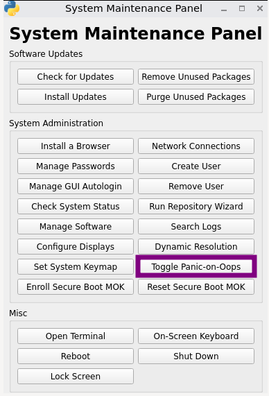
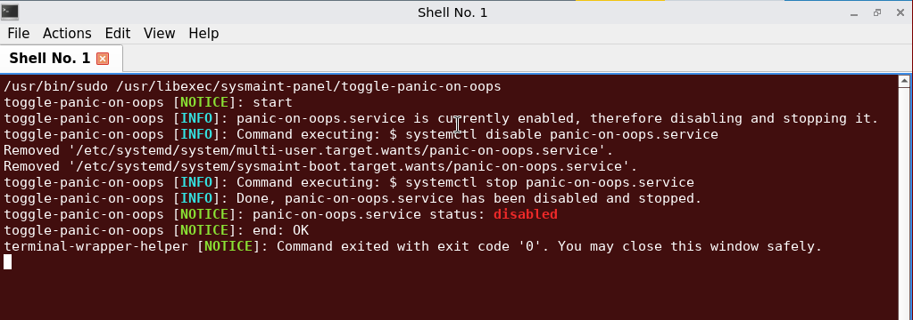
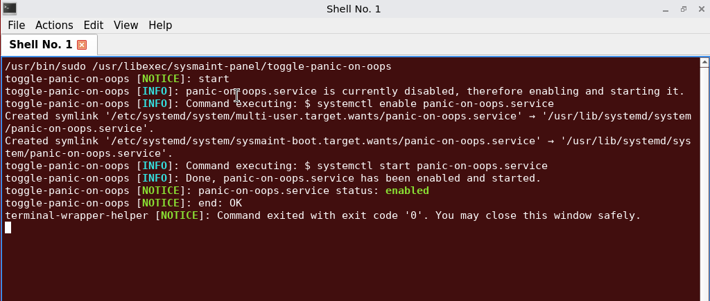

We believe security software like Kicksecure needs to remain Open Source and independent. Would you help sustain and grow the project? Learn more about our 14 year success story and maybe DONATE!
TroubleshootingDocumentationSignalPrevious page: TroubleshootingIndex page: DocumentationNext page: Signalpanic-on-oops
Select graphical user interface (GUI), command line interface (CLI) or recovery kernel boot parameter change.
panic-on-oops configures kernel behavior to panic on
both kernel oopses and kernel warnings (WARN() path) by setting sysctl
values late in the boot process using
panic-on-oops.service.
Introduction
- What it does:
panic-on-oopsis a security feature that forces a reboot when the system's kernel reports a serious problem, instead of letting it keep running in an unknown state. - What triggers it: When enabled, the kernel is configured to immediately trigger a kernel panic when a kernel "oops" or certain kernel warnings occur.
- What you will see: A kernel panic in this configuration results in a sudden, forced, unexpected reboot.
- Why it is useful: This is usually helpful because it avoids running in a potentially unsafe or unreliable state.
- Possible issues: In some cases, it can cause problems, such as reboots triggered by buggy drivers or hardware issues.
- Testing: For troubleshooting or testing, you can temporarily
disable
panic-on-oops. After testing, it is recommended to re-enable it.
Usage
GUI
System
Maintenance Panel provides a button
Toggle Panic-on-Oops.[1]

- If enabled: Disables and stops
panic-on-oops.service.

- If disabled: Enables and starts
panic-on-oops.service.

A visual confirmation about the If enabled: status (on or off) will be shown.
CLI
Check status
1 Check whether the service is enabled.
systemctl is-enabled panic-on-oops.service
2 Check whether the service is active.
systemctl is-active panic-on-oops.service
3 Done.
Service enablement and runtime status have been checked.
Enable or disable using systemd
1 Enable and start the service.
sudo systemctl enable panic-on-oops.service sudo systemctl start panic-on-oops.service
2 Disable and stop the service.
sudo systemctl disable panic-on-oops.service sudo systemctl stop panic-on-oops.service
3 Done.
The service has been enabled or disabled using systemd.
recovery kernel boot parameter change
Temporary Kernel Boot Parameter Change and add the
parameter
panic-on-oops=0.Development
Click "Learn More" on the right to show Development details.
Overview
Kernel sysctl documentation for oops_limit and
warn_limit: docs.kernel.org:
kernel sysctl oops-limit and docs.kernel.org:
kernel sysctl warn-limit
The security-misc-shared package ships:
- A helper script:
/usr/libexec/security-misc/panic-on-oops - A systemd unit:
/usr/lib/systemd/system/panic-on-oops.service - GRUB hardening configuration referencing
panic-on-oops:/etc/default/grub.d/40_kernel_hardening.cfg
When enabled and started, panic-on-oops.service runs the
helper script to apply sysctl settings:
kernel.oops_limit=1kernel.warn_limit=1
These settings make the kernel panic on the first occurrence of an oops and on the first kernel warning (WARN() path). This can improve security in some threat models, but can also increase denial-of-service risk and may panic due to buggy drivers.
In addition, security-misc-shared enables:
kernel.panic=-1(from/usr/lib/sysctl.d/990-security-misc.conf)
This causes an immediate reboot after a kernel panic.
Helper script
/usr/libexec/security-misc/panic-on-oops supports two
actions:
enabledisable
On enable it sets:
kernel.oops_limit=1kernel.warn_limit=1
On disable it sets:
kernel.oops_limit=0kernel.warn_limit=0
The script sources /usr/libexec/helper-scripts/pre.bsh
if available, which can source configuration snippets from:
/etc/panic-on-oops_pre.d/*.conf/usr/local/etc/panic-on-oops_pre.d/*.conf
For example, debug-misc ships a config snippet:
/etc/panic-on-oops_pre.d/40_debug-misc.conf
with the contents:
## Disable panic-on-oops by package security-misc-shared.
exit 0This causes the helper script to exit successfully before applying sysctl settings, effectively disabling the behavior while leaving the service unit itself unchanged.
systemd service
/usr/lib/systemd/system/panic-on-oops.service:
- Is a
Type=oneshotservice withRemainAfterExit=yes - Applies settings at start:
ExecStart=/usr/libexec/security-misc/panic-on-oops enable
- Reverts settings at stop:
ExecStop=/usr/libexec/security-misc/panic-on-oops disable
It also includes:
ConditionKernelCommandLine=!panic-on-oops=0
Meaning: if the kernel command line contains
panic-on-oops=0, the service will be skipped.
sysmaint-boot.target
The sysmaint session target file contains a commented line:
#Wants=panic-on-oops.service
This indicates that panic-on-oops.service could be
started as part of sysmaint sessions, but it is intentionally commented
out in the shipped configuration.
References
- It launches: *
/usr/libexec/sysmaint-panel/toggle-panic-on-oopsThis toggle script checks: *systemctl is-enabled panic-on-oops.service
Categories: Documentation